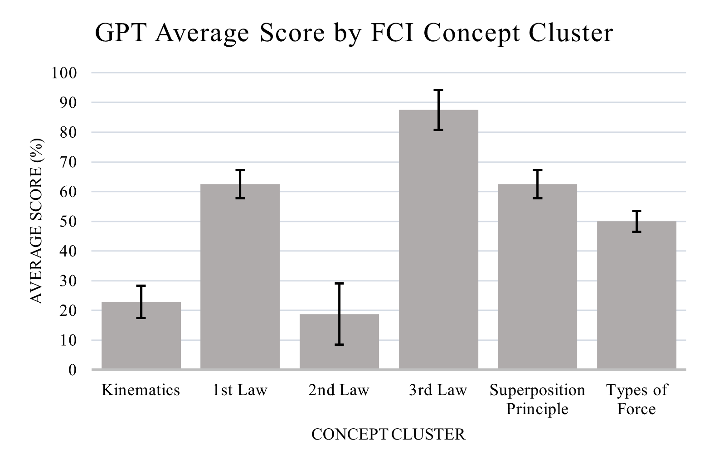
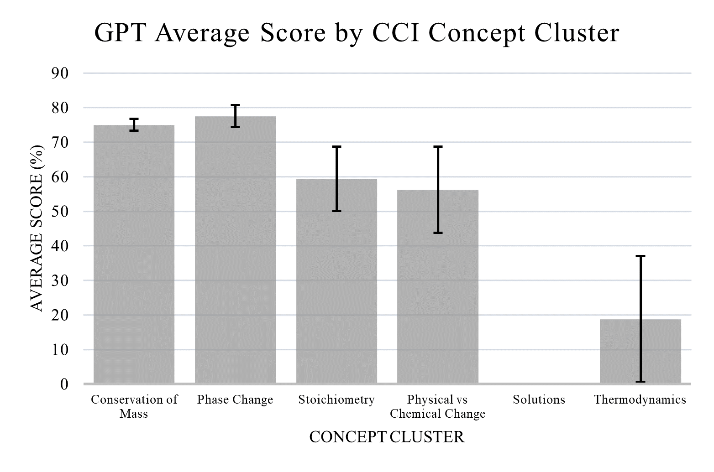

by Sav Wheeler, Rachel Scherr, & Charity Lovitt
With many students turning to machine learning models such as ChatGPT for homework help, diagnosing the accuracy of the information these technologies purport across different fields is more important than ever. In this study, we find that ChatGPT’s responses to standard physics and chemistry questions are consistent with an accurate theoretical understanding, but are often incorrect when applied to a given system, reflecting many of the same misconceptions as students.
Jump to...
Released in November of 2022, ChatGPT is a trained AI (artificial intelligence) model based on the large language model GPT-3.5, with a focus on training for a dialogue-based conversational format[1]. The AI gained widespread popularity soon after its release, including among students, who frequently used the AI for academic help[2, 3]. The potential for student use of GPT as a writing tool has sparked fears among educators of a new wave of plagiarism and cheating[3], though text-checker tools have since been developed to mitigate this[4, 5]. ChatGPT has gained academic notoriety for passing or excelling at several large exams such as the SAT, GRE, and multiple AP tests[6]. However, these general benchmark tests may not be representative of field-specific student understandings, and in several cases, ChatGPT has not only failed an exam, but performed worse on average than student responses[7].
Haensch et al.’s[8] evaluation of social media content relating to ChatGPT, in an effort to gauge student views on use of the program, suggests that students generally view ChatGPT positively in its applications and use for writing essays, generating code, and answering questions. Alongside this, their study suggests an under-representation on social media of ChatGPT’s capacity to generate misinformation in these applications. Bridging the gap between the content-critical academic perspective and opportunistic student perspectives on this technology will be essential, going forward, in ensuring students know the limitations of the tools at their disposal, and develop a degree of awareness of how generative AI technology can affect their learning for better or worse.
In this study, we attempt to quantify the performance of ChatGPT on the Force Concept Inventory (FCI) and Chemical Concepts Inventory (CCI). While these inventories are not necessarily representative of the complete range of topics and concepts in introductory physics and chemistry courses, they contain a breadth of essential foundational concepts such as Newtonian laws, kinetics, stoichiometry, and conservation of mass. We focus on the categorical performance of ChatGPT on sets of questions in contrast to overall performance as well as a qualitative analysis of specific prompt responses indicative of misconceptions or limitations of the AI, especially those comparable to students’ own.
The purpose of this study is to examine the trends in ChatGPT’s responses to concept inventory questions as a means of quantifying its capabilities, limitations, and potential to inform or mislead students who use the chatbot. The quantitative analysis can provide a general overview of the accuracy of GPT’s responses, while the qualitative analysis can provide a more in-depth look at what particular skills or frameworks ChatGPT employs or fails to employ in its problem solving, and how these resources might be consistent with students’ misconceptions.
We prompted ChatGPT with questions based on the FCI and CCI. Because many of the questions were based on diagrams, written transcriptions of the diagrams were given for any question which depended on one, including any questions with answers that were a part of the diagram or other representative visuals. All prompts are included with ChatGPT’s responses on the website listed in the Data section of this paper. Five standard trials were run for the exam, where all questions for a trial were given in the same chatroom, including question numbers and lettered options. Three “variant” trials were also conducted, which tested different experimental changes to the testing method. Variant trial 1 had ChatGPT answer the questions individually in separate chatrooms. Variant trials 2 and 3 included a preliminary “roleplay” prompt to see if ChatGPT performs better or worse when taking on a given role, which were respectively:
Raw data for responses can be found on at following here.
ChatGPT scored generally poorly on the FCI (x̄ = 51%, σ = 8.5%) and CCI (x̄ = 55%, σ = 4.3%), with a distribution of predicted scores falling within 44%-59% and 51%-59% respectively with 99% confidence. An FCI score of 60% is considered to be an entry threshold to Newtonian physics [9]. Notably, GPT had a slightly lower median score (x̃ = 48%) than mean score on the FCI, indicating a slight right skew in scores.
The FCI outlines six “clusters” of concepts, as well as indicating which questions contain answers that rely on an understanding of each concept. Based on ChatGPT’s responses to questions containing answers corresponding to one or more of these concept clusters, we recorded the metrics of ChatGPT’s performance on different clusters.
Table I shows ChatGPT’s average scores on each FCI cluster along with their number of questions (nq), standard deviations, and 99% confidence intervals of scores.
TABLE I. Key figures from ChatGPT’s FCI cluster performance
| Concept Cluster | nq | x̄ | σ | 99% CI |
|---|---|---|---|---|
| Kinematics | 7 | 23% | 15% | [9.0%, 37%] |
| Newton’s First Law | 8 | 63% | 13% | [50%, 75%] |
| Newton’s Second Law | 4 | 19% | 29% | [0.0%, 45%] |
| Newton's Third Law | 4 | 88% | 19% | [70%, 100%] |
| Superposition Principle | 4 | 63% | 13% | [50%, 75%] |
| Types of Force | 12 | 50% | 10% | [41%, 59%] |
Fig. 1 also shows the average score on questions in each concept cluster on the FCI by ChatGPT, with margins of error indicated by thin lines on bars.
Barbera and Schwartz’s[10] analysis of the CCI assigns questions to one or more of twelve general chemical concepts. In this paper, we will only include concepts with two or more associated questions as “clusters”, in an effort to ensure our representation of GPT’s performance on evaluated concepts is not limited to a single question. With this restriction in mind, there are six major clusters of concepts in the CCI. Likewise with the FCI’s concepts, we recorded the metrics of ChatGPT’s performance on these different clusters.
Table II shows ChatGPT’s average scores on each CCI cluster along with their number of questions (nq), standard deviations, and 99% confidence intervals of scores.
TABLE II. Key figures from ChatGPT’s CCI cluster performance
| Concept Cluster | nq | x̄ | σ | 99% CI |
|---|---|---|---|---|
| Conservation of Mass-Matter | 10 | 75% | 5.3% | [71%, 79%] |
| Phase Change | 5 | 78% | 7.1% | [69%, 86%] |
| Stoichiometry/Limiting Reagent | 4 | 59% | 19% | [35%, 83%] |
| Physical vs Chemical Changes | 2 | 56% | 18% | [24%, 88%] |
| Solutions | 3 | 0.0% | 0.0% | [0.0%, 0.0%] |
| Thermodynamics | 2 | 19% | 26% | [0.0%, 66%] |
Fig. 2 also shows the average score on questions in each concept cluster on the CCI by ChatGPT, with margins of error indicated by thin lines on bars.
ChatGPT’s consistent incorrect responses may result in students receiving incorrect or confusing information when using ChatGPT as a learning tool for physics or chemistry. The following sections discuss the potential causes and implications of ChatGPT’s incorrect responses, and how educators can adapt to widespread student use of ChatGPT with these limitations in mind.
In some cases, ChatGPT’s responses to inventory questions represent accurate theoretical understanding of concepts in physics and chemistry, and its explanations may be helpful to students. For example, when asked to compare the collision forces between a large truck and small compact car, ChatGPT explains,
According to Newton’s Third Law of Motion, for every action, there is an equal and opposite reaction. Therefore, during the collision between the truck and the car, both vehicles will exert equal and opposite forces on each other. The truck exerts the same amount of force on the car as the car exerts on the truck.
In other cases, though, ChatGPT responses are likely to mislead learners. For example, ChatGPT’s responses to kinematics questions reflected common student difficulties distinguishing velocity and acceleration, as well as a tendency to add velocities as scalars rather than vectors[11]. When asked about a constant-velocity hockey puck that receives a horizontal “kick” in the direction horizontally perpendicular to its existing path, ChatGPT explained,
Since the surface is frictionless, the horizontal component of the velocity of the puck should remain constant throughout its motion. Therefore, the speed of the puck just after it receives the kick should be the arithmetic sum of the speed it had before the kick and the speed it acquires from the kick. Thus, the answer is the arithmetic sum of speeds v0 and v.
In another response to the hockey puck scenario, ChatGPT interpreted the instantaneous horizontal “kick” to be a long-lasting force that produces circular motion:
When the hockey puck receives an instantaneous horizontal “kick” in the direction horizontally perpendicular to its existing path at point B, it will start to move in a curved path. Since the surface is frictionless, there is no force to slow down or stop the puck’s motion. The puck will continue moving with a constant speed but changing direction due to the force acting on it.
Frequently, ChatGPT’s responses would describe the associated concept necessary for solving the question correctly, but apply the concept incorrectly. For example, when responding to a question about a sample of water with sugar dissolved in it, ChatGPT explained:
When a solute like sugar is dissolved in a solvent like water, the molecules of the solute become evenly dispersed throughout the solution. If more solvent is added to the solution, the concentration of the solute decreases, but the number of solute molecules in the solution remains the same. Therefore, when additional water is added to the solution, the number of sugar molecules in the 0.5 L sample taken from the same height (0.5 L line) will be the same as before.
In the above situation, ChatGPT’s explanation of concentration in solution is accurate, but it fails in correctly interpreting the applied context of taking a sample of a solution. Similarly, in a response to a question about water evaporating in a closed container, it treated the system as open:
When all the water in a closed container is evaporated, the area that was previously filled with water molecules will be empty, and there will be no molecules in that area… If the area is viewed under a microscope, it will appear empty because there are no molecules present to reflect or scatter light.
Occasionally, ChatGPT may misinterpret the ‘archetype’ of questions, causing incorrect responses that would be correct if the context were different. For example, in response to a question about a rocket engine firing with constant thrust at a right angle to the rocket’s initial motion, ChatGPT incorrectly states that the rocket’s speed is constant during the thrust:
As the rocket’s engine produces a constant thrust at a right angle to the line [of initial motion], the rocket will move in a circular path... Therefore, the rocket’s speed will be constant, as it moves with a constant angular velocity.
This response, however, would be correct if the rocket were using its thrust to maintain orbit around a planet, another common type of question associated with rockets. Sometimes, ChatGPT’s interpretations veer toward the surreal: in a question regarding a ball on a string that a person swings in a horizontal circle over their head, ChatGPT responds,
According to Newton’s First Law of Motion, an object in motion will continue in a straight line with a constant speed unless acted upon by a net external force. In this case, the heavy ball is moving in a circular path due to the tension force in the string, which provides the necessary centripetal force. When the string suddenly breaks, there is no longer a centripetal force acting on the ball, and it will continue to move tangentially to its path at the moment of release. However, since the person is also moving in the circular path, the ball will also have a component of motion towards the person. Therefore, the path the ball will travel relative to the person is mostly tangential to its path at the moment of release, but curved inwards along the horizontal plane towards the person.
The AI may again be interpreting the language of the prompt as similar enough to another archetype of question- in this case, misinterpreting a question about horizontal centripetal force as a question about orbits- to attempt to answer the prompt as if it were responding to the other archetype.
Overall, ChatGPT is an unreliable source of physics and chemistry reasoning. It frequently misinterprets the context, content, and constraints of questions.
ChatGPT offers accurate, conversational explanations of physics and chemistry theory in some cases, and incorrect or misleading explanations in others. Students who use it in the context of these fields may benefit from its explanations, but also risk having common misconceptions reinforced. One potential educational application of ChatGPT is producing practice problems that require students to identify and correct a problem ChatGPT has solved incorrectly. Because ChatGPT’s responses are worded convincingly and often purport accurate theoretical explanations to supplement incorrect practical explanations, such questions would challenge students to think critically about the information presented in ChatGPT’s response and formulate a logical flow of operations for solving the same problem. This would allow students to further familiarize themselves with applying concepts in physics, as well as giving them practice in fact-checking in these fields.
In general, an outright ban of ChatGPT in the classroom is unlikely to dissuade students from using the AI for their own purposes outside of the classroom; thus, giving students the tools to reconcile their own understandings with information purported by the AI would be highly beneficial to students who do use the AI regularly, especially as this technology becomes more integrated in our daily lives in the future.
[1] https://openai.com/blog/chatgpt. Retrieved 4/17/2023.
[2] https://www.tooltester.com/en/blog/chatgpt-statistics/. Retrieved 4/17/2023.
[3] M. Sullivan et al., J. Appl. Learning and Teaching, 6, 1 (2023).
[4] https://www.zerogpt.com/. Retrieved 4/17/2023.
[5] https://writer.com/ai-content-detector/. Retrieved 4/17/2023.
[6] OpenAI, arXiv preprint (to be published).
[7] P.M. Newton, EdArXiv preprint (to be published).
[8] A.C. Haensch et al. (to be published).
[9] D. Hestenes and I. Halloun, The Phys. Teach., 33, 8 (1995).
[10] J. Barbera and P. Schwartz, J. Chem. Education, 91, 5 (2014).
[11] D. Hestenes et al., The Phys, Teach., 30, 3 (1992).